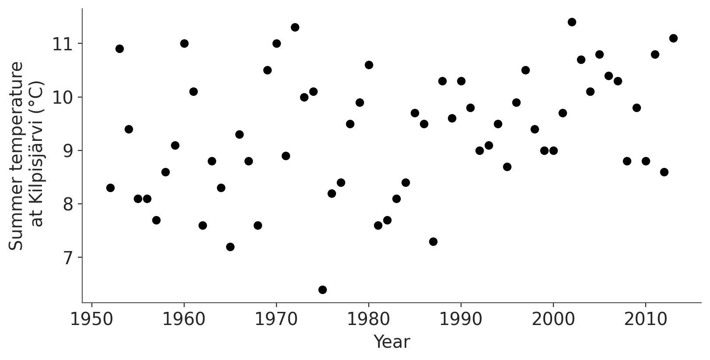
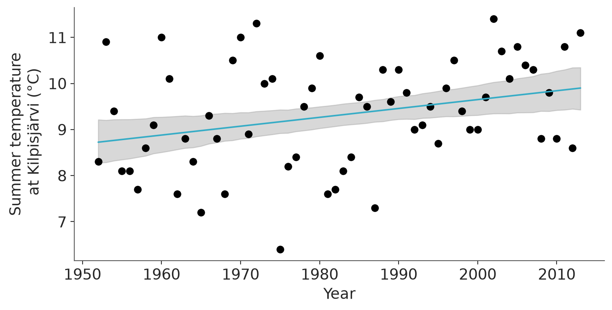

import warnings
import sys
sys.path.insert(0, '..')
import arviz as az
import matplotlib.pyplot as plt
import numpy as np
import pandas as pd
import xarray as xr
#warnings.filterwarnings("ignore", category=FutureWarning)
az.style.use("arviz-variat")
az.rcParams["stats.ci_prob"] = 0.90
plt.rcParams["figure.dpi"] = 100
SEED = 48927 # set random seed for reproducibility
np.random.seed(SEED)How many iterations to run and how many digits to report
This notebook includes the code for Bayesian Workflow book Sections 11.4 How many parallel chains and how many iterations and 11.6 How many digits to report based on posterior uncertainty.
1 Introduction
When running any iterative algorithm we need to decide when to stop or how many iterations and how many sequences to run. In the context of posterior inference, the answer can be divided in two parts: (1) how many chains and iterations do we need to assess that the algorithm is sampling from something close to the target distribution, and (2) how many draws do we need so that the reported posterior summaries would not change in important ways if the inference would be repeated? This notebook discusses the second part.
Before we can answer how many chains and iterations we need to run, we need to know how many significant digits we want to report. Too often, we see tables filled with numbers like \(1.7705\). It’s very unlikely that all these digits are accurately estimated, and also very unlikely that the accuracy in magnitude of one in ten thousand would be needed for any practical purpose. Reporting too many digits makes it more difficult to read summary tables. Thus, before considering how many iterations we need it’s useful to consider how many digits it is sensible to report.
Without any additional information, we may assume that relative errors smaller than 1% are typically negligible and thus most of the time reporting at most 2 significant digits would be sufficient. Accuracy to just one significant digit can be sufficient in the early stages of analysis and can be sensible and convenient even in final reporting, as discussed in the example below.
MCMC and other Monte Carlo methods are stochastic and if the inference would be repeated with a different random seed (random number generators in computers are usually producing deterministic pseudo-random sequences), the estimates would vary. The amount of variation reduces when more iterations are used. For example, if the posterior would be close to normal with standard deviation 1, \(\mathrm{normal}(\mu, 1)\), then 2000 independent draws from the posterior would provide enough accuracy that the second significant digit of posterior mean would only sometimes vary to one smaller or larger value. On the other hand, for 1 significant digit accuracy, 100 independent draws would be often sufficient, but reliable convergence diagnostics may need more iterations than 100 (see, e.g., Vehtari et al. (2021)). The above thumb-rules are useful for the necessary number of independent draws for a posterior mean of a distribution which is relatively close to normal and in other cases and, for exmaple, for posterior quantiles more draws may be needed.
MCMC in general doesn’t produce independent draws and the effect of dependency affects how many draws are needed to estimate different expectations. As in general, we don’t know beforhand how MCMC will perform for a new posterior, and we don’t know what is the scale of that posterior beforehand, we need to start with some initial guess of number of iterations to run.
2 Summary
Summary of workflow for how many digits to report
- Run inference with some default number of iterations
- Check convergence diagnostics for all parameters
- Check that ESS is big enough for reliable convergence diagnostics for all quantities of interest
- Look at the posterior for quantities of interest and decide how many significant digits is reasonable taking into account the posterior uncertainty (using SD, MAD, or tail quantiles)
- Check that MCSE is small enough for the desired accuracy of reporting the posterior summaries for the quantities of interest.
- If the accuracy is not sufficient, report less digits or run more iterations.
- Halving MCSE requires quadrupling the number of iterations (if CLT holds).
- Different quantities of interest have different MCSE and may require different number of iterations for the desired accuracy.
- Some quantities of interest may have posterior distribution with infinite variance, and then the ESS and MCSE are not defined for the expectation. In such cases use, for example, median instead of mean and mean absolute deviation (MAD) instead of standard deviation. ESS and MCSE for (non-extreme) quantiles can be derived from the (non-extreme) cumulative probabilities that always have finite mean and variance.
3 Example
As an example, we analyse the trend in summer months average temperature 1952–2013 at Kilpisjärvi in northwestern Finnish Lapland. Summer months are June, July, and August, and we analyse the average temperature over these months in each year.
3.1 Setup
Load packages
from cmdstanpy import CmdStanModel, disable_logging
disable_logging()
from utils import print_stan/home/osvaldo/anaconda3/envs/bwb/lib/python3.14/site-packages/tqdm/auto.py:21: TqdmWarning: IProgress not found. Please update jupyter and ipywidgets. See https://ipywidgets.readthedocs.io/en/stable/user_install.html
from .autonotebook import tqdm as notebook_tqdmfrom jax import random
import jax.numpy as jnp
import numpyro
from numpyro import distributions as dist
from numpyro.infer import NUTS, MCMC3.2 Kilpisjärvi data and model
Load Kilpisjärvi summer month average temperatures 1952-2013:
# Load data
data_kilpis = pd.read_csv("data/kilpisjarvi-summer-temp.csv", sep=";")
data_lin = {
"N": len(data_kilpis),
"x": data_kilpis["year"].values.astype(float),
"y": data_kilpis.iloc[:, 4].values.astype(float),
"xpred": 2016.0
}Plot the data
_, ax = plt.subplots(figsize=(8, 4))
ax.scatter(data_lin["x"], data_lin["y"], color="black")
ax.set(xlabel="Year", ylabel="Summer temperature\n at Kilpisjärvi (°C)");
We use a simple linear model with normal observation model, weakly informative normal prior, and the predictor (time) centered to have 0 mean. We assume a priori that increase or decrease in temperature is equally likely, and that it is unlikely that temperature would change more 10 degrees in 100 years. We also assume that yearly variation in summer temperatures is likely to be less than 3 degrees.
The following code centers the covariate to reduce posterior dependency of slope and coefficient parameters. It also makes it easier to define the prior on average temperature in the center of the time range (instead defining prior for temperature at year 0).
tango!!!
mod_lin = CmdStanModel(stan_file="linear.stan")
print_stan(mod_lin)// Gaussian linear model with adjustable priors
data {
int<lower=0> N; // number of data points
vector[N] x; // covariate / predictor
vector[N] y; // target
real pmualpha_c;// prior mean for alpha_c
real psalpha; // prior std for alpha
real pmubeta; // prior mean for beta
real psbeta; // prior std for beta
real pssigma; // prior std for half-normal prior for sigma
}
transformed data {
// centering the predictor makes the posterior easier to sample
real xmean = mean(x);
vector[N] x_c = x - xmean;
}
parameters {
real alpha_c; // intercept for centered x
real beta; // slope
real<lower=0> sigma; // standard deviation is constrained to be positive
}
model {
alpha_c ~ normal(pmualpha_c, psalpha); // prior
beta ~ normal(pmubeta, psbeta); // prior
sigma ~ normal(0, pssigma); // as sigma is constrained to be positive,
// this is same as half-normal prior
y ~ normal(alpha_c + beta*x_c, sigma); // observation model / likelihood
}def mod_lin(
x,
pmualpha_c, # prior mean for alpha_c
psalpha, # prior std for alpha
pmubeta, # prior mean for beta
psbeta, # prior std for beta
pssigma, # prior std for half-normal prior for sigma
y=None,
**kwargs # trick to ignore unused inputs
):
"""Gaussian linear model with adjustable priors.
"""
# centering the predictor makes the posterior easier to sample
xmean = jnp.mean(x)
x_c = x - xmean
# intercept for centered x
alpha_c = numpyro.sample("alpha_c", dist.Normal(pmualpha_c, psalpha))
# slope
beta = numpyro.sample("beta", dist.Normal(pmubeta, psbeta))
# standard deviation is constrained to be positive
sigma = numpyro.sample("sigma", dist.HalfNormal(pssigma) )
# ----- likelihood -----
mu = alpha_c + beta * x_c
numpyro.sample("obs", dist.Normal(mu, sigma), obs=y)Prior parameter values for weakly informative priors
data_lin_priors = {
"pmualpha_c": 10, # prior mean for average temperature
"psalpha": 10, # weakly informative
"pmubeta": 0, # a priori incr. and decr. as likely
"psbeta": 0.1/3, # avg temp prob does not incr. more than a degree per 10 years: setting this to +/-3 sd's
"pssigma": 1, # setting sd of total variation in summer average temperatures to 1 degree implies that +/- 3 sd's is +/-3 degrees
**data_lin
}3.3 Run inference for some number of iterations
We run MCMC with the current default settings. All convergence diagnostics pass and all effective sample size are big enough that we can assume that the convergence diagnostics are reliable.
fit_lin = mod_lin.sample(data=data_lin_priors, seed=SEED, show_progress=False)
dt_fit_lin = az.from_cmdstanpy(fit_lin)kernel = NUTS(mod_lin)
mcmc = MCMC(kernel, num_warmup=1000, num_samples=1000, progress_bar=False)
mcmc.run(random.PRNGKey(SEED), **data_lin_priors, extra_fields=("num_steps", "energy"))
dt_fit_lin = az.from_numpyro(mcmc)3.4 Run convergence diagnostics
There were no convergence issues reported by sampling. We can also explicitly call CmdStan inference diagnostics:
az.diagnose(dt_fit_lin)Divergences
No divergent transitions found.
E-BFMI
E-BFMI satisfactory for all chains.
ESS
Effective sample size satisfactory for all parameters.
R-hat
R-hat values satisfactory for all parameters.
Processing complete, no problems detected.FalseWe check \(\widehat{R}\) and ESS values, which in this case all look good.
az.summary(dt_fit_lin, var_names=["alpha_c", "beta", "sigma"])| mean | sd | eti90_lb | eti90_ub | ess_bulk | ess_tail | r_hat | mcse_mean | mcse_sd | |
|---|---|---|---|---|---|---|---|---|---|
| alpha_c | 9.312 | 0.143 | 9.1 | 9.5 | 3455 | 2969 | 1.00 | 0.0024 | 0.0017 |
| beta | 0.0192 | 0.0079 | 0.0064 | 0.032 | 4581 | 2791 | 1.00 | 0.00012 | 8.6e-05 |
| sigma | 1.119 | 0.105 | 0.96 | 1.3 | 3481 | 2931 | 1.00 | 0.0018 | 0.0014 |
Compute posterior draws for the linear fit
posterior = az.extract(dt_fit_lin, group="posterior")
x_centered = xr.DataArray(data_lin["x"] - data_lin["x"].mean(), dims=["obs"])
mu = posterior["alpha_c"] + posterior["beta"] * x_centeredPlot the linear fit with 90% posterior interval
mu_mean = mu.mean(dim="sample")
hdi = az.hdi(mu, dim="sample")
_, ax = plt.subplots(figsize=(8, 4))
ax.fill_between(data_lin["x"], hdi.sel({"ci_bound":"lower"}), hdi.sel({"ci_bound":"upper"}), alpha=0.3, color="gray")
ax.plot(data_lin["x"], mu_mean, "C0-")
ax.scatter(data_lin["x"], data_lin["y"], color="black", s=40, label="Observed data")
ax.set(xlabel="Year", ylabel="Summer temperature\n at Kilpisjärvi (°C)");
At this point it is sufficient that diagnostics are OK and effective sample sizes are large enough (>400) that we can assume the diagnostics to be reliable.
We could also do posterior predictive checking and residual plots, but now we focus on checking how many MCMC iterations are needed and how many digits to report in posterior summary results.
3.5 How many digits to report based on posterior uncertainty
We want to report posterior summaries for the slope, that is the increase in average summer temperature, and for the probability that the slope is positive. We first consider what is the reasonable reporting accuracy if the posterior inference would be exact (ie ignoring first the Monte Carlo variability).
We start looking at the mean and 90% interval for the slope parameter beta
az.summary(dt_fit_lin, var_names=["beta"], kind="stats", round_to=3)| mean | sd | eti90_lb | eti90_ub | |
|---|---|---|---|---|
| beta | 0.019 | 0.008 | 0.006 | 0.032 |
These values correspond to the temperature increase per year, but to improve readability we switch looking at the temperature increase per 100 years.
dt_fit_lin.posterior["beta_100"] = 100 * dt_fit_lin.posterior["beta"]
az.summary(dt_fit_lin, var_names=["beta_100"], kind="stats")| mean | sd | eti90_lb | eti90_ub | |
|---|---|---|---|---|
| beta_100 | 1.9 | 0.79 | 0.64 | 3.2 |
The number of digits shown in Python varies depending on the print method and options for the specific object.
The number of digits shown in Python can be controlled in different ways, for instance in jupyter notebooks (and quarto) we can use the magic %precision. %precision %.2g means to print using two significant digits. Note that this only affects the display and we can override it for specific print calls. Other libraries like numpy and pandas have their own display options. In ArviZ the number of digits shown in the posterior summary can be modified using the round_to argument, the default value is round_to="auto", which applies some custom rounding rules that varies for different quantities, information from the MCSE is used when the MCSE is reported. Other functions in ArviZ use “2g” as default, which means two significant digits.
The more digits are shown, the more of them are likely to be unnecessary clutter distracting the reader from the important message.
For practical reporting accuracy, and considering the width of the 90% interval, we would report posterior mean as 2.0 and the posterior interval as [0.7, 3.2]. Depending on the context, it might be even better to round more, and report that the increase is estimated to be 1 to 3 degrees per century (81% probability, or rounded to 80% probability), or 0 to 4 degrees per century (99% probability). There is no need to stick to reporting 90% or 95% interval.
The number of significant digits needed for reporting can be often determined also with rough posterior approximations that indicate the order of magnitude of the posterior mean and scale, and then more iterations may be needed to get more accurate estimate for those digits.
3.6 How many digits to report based on Monte Carlo standard error
Now that we have an estimate for the posterior uncertainty of the slope parameter, we can check whether we have enough many iterations for the desired reporting accuracy. Markov chain Monte Carlo method used by Stan to make the posterior estimates is stochastic. If we repeat the computation with different random number generator seed, we get slightly different estimates.
estimates = []
for i in range(1, 11):
fit_temp = mod_lin.sample(data=data_lin_priors, seed=SEED + i, show_progress=False)
_beta_100 = az.from_cmdstanpy(fit_temp).posterior["beta"] * 100
mean_temp = _beta_100.mean().item()
q05_temp, q95_temp = az.eti(_beta_100).values
estimates.append([mean_temp, q05_temp, q95_temp])
pd.DataFrame(estimates, columns=["mean", "5%", "95%"]).round(3)| mean | 5% | 95% | |
|---|---|---|---|
| 0 | 1.950 | 0.633 | 3.254 |
| 1 | 1.929 | 0.625 | 3.220 |
| 2 | 1.920 | 0.630 | 3.158 |
| 3 | 1.936 | 0.675 | 3.151 |
| 4 | 1.959 | 0.672 | 3.228 |
| 5 | 1.973 | 0.675 | 3.322 |
| 6 | 1.932 | 0.664 | 3.176 |
| 7 | 1.937 | 0.640 | 3.223 |
| 8 | 1.960 | 0.660 | 3.257 |
| 9 | 1.957 | 0.654 | 3.256 |
estimates = []
for i in range(1, 11):
mcmc.run(random.PRNGKey(SEED+i), **data_lin_priors)
_beta_100 = az.from_numpyro(mcmc).posterior["beta"] * 100
mean_temp = _beta_100.mean().item()
q05_temp, q95_temp = az.eti(_beta_100).values
estimates.append([mean_temp, q05_temp, q95_temp])
pd.DataFrame(estimates, columns=["mean", "5%", "95%"]).round(3)We see that for mean the third digit is varying and the rounded value is between 1.9 and 2.0. For the 5% quantile even the first significant digit is sometimes varying and the rounded value would vary between 0.6 and 0.7. For the 95% quantile the second digit is varying and the rounded values would vary between 3.2 and 3.3. Based on this, it would be OK to report the mean as 1.9 or 2 and 90% interval as [0.7, 3.2] as based on the first Monte Carlo estimate. Considering the scale, the minor variation in the last digit is not affecting the interpretation of the results. Alternatively the courser ranges [1, 3] or [0, 4] could be reported as discussed above.
Instead of repeating the estimation many times we can estimate the accuracy of the original sampling by computing Monte Carlo standard error (MCSE) that takes into account the quantity of interest, and the effective sample size of MCMC draws (see, e.g., Vehtari et al. (2021)).
beta_100 = dt_fit_lin.posterior["beta_100"]
xr.concat(
[
az.mcse(beta_100),
az.mcse(beta_100, method="quantile", prob=0.05),
az.mcse(beta_100, method="quantile", prob=0.95),
],
dim="mcse",
).assign_coords(mcse=["mcse_mean", "mcse_q05", "mcse_q95"]).to_dataframe().T.round(3)| mcse | mcse_mean | mcse_q05 | mcse_q95 |
|---|---|---|---|
| beta_100 | 0.012 | 0.029 | 0.036 |
We show also the ESS values for mean and quantiles, to illustrate that the ESS values can be different for different quantities, and that similar ESS doesn’t lead to similar MCSE as MCSE depends also on the quantity.
xr.concat(
[
az.ess(beta_100, method="mean"),
az.ess(beta_100, method="quantile", prob=0.05),
az.ess(beta_100, method="quantile", prob=0.95),
],
dim="ess",
).assign_coords(ess=["mean", "q05", "q95"]).to_dataframe().T.round(3)| ess | mean | q05 | q95 |
|---|---|---|---|
| beta_100 | 4572.358 | 2998.71 | 2940.054 |
The MCSE for the mean estimate is about 0.01 and for 5% and 95% quantiles about 0.03 (in beta_100 scale, multiply by 100). If we multiply these by 2, the likely range of variation due to Monte Carlo is \(\pm 0.02\) for mean and \(\pm 0.07\) for 5% and 95% quantiles. From this we can interpret that it’s unlikely there would be variation in the reported estimate for the mean, if it is reported as 2.0. For 5% and 95% quantiles there can be variation in the first decimal digit, but that difference would not be meaningful in most cases. We could run more iterations to get the MCSE for quantiles down to something like 0.01, which would require about 10 times more iterations. Assuming the posterior has finite variance and MCMC is mixing well, we expect that running four times more iterations would halve the MCSEs.
As discussed before, it might be anyway better to report the posterior uncertainty interval with less digits, and if we reported either 80% interval \([1, 3]\) or 99% interval \([0, 4]\), we would already have sufficient accuracy for the number of shown digits. These MCSE estimates illustrate also the fact that usually tail quantiles have lower accuracy than the posterior mean.
We can also report the probability that the temperature change is positive.
beta_100_pos = dt_fit_lin.posterior["beta_100"] > 0
xr.concat(
[
az.mean(beta_100_pos),
az.mcse(beta_100_pos),
],
dim="_",
).assign_coords(_=["mean", "mcse"]).to_dataframe().T.round(3)| _ | mean | mcse |
|---|---|---|
| beta_100 | 0.99 | 0.001 |
The probability is simply estimated as a posterior mean of an indicator function and the usual MCSE for mean estimate is used. The MCSE indicates that we have enough MCMC iterations for practically meaningful reporting that the probability that the temperature is increasing is larger than 99%. There is not much practical difference to reporting that the probability is 99.3% and to estimate that third digit accurately would require 64 times more iterations. For this simple problem, sampling that many iterations would not be time consuming, but we might also instead consider to obtain more data to verify that the summer temperature in northern Finland has been increasing since 1952.
We additionally compute probabilities that the temperature increase is more than 1, 2, 3 or 4 degrees, and corresponding MCSEs and ESSs.
indicators_dt = xr.Dataset({f'beta_{t}p': beta_100 > t for t in [1, 2, 3, 4]})
result = xr.concat(
[
az.mean(indicators_dt),
az.mcse(indicators_dt),
az.ess(indicators_dt),
],
dim="stat",
).assign_coords(stat=["mean", "mcse", "ess"]).to_dataframe().T.round(3)
result['ess'] = result['ess'].astype(int)
result| stat | mean | mcse | ess |
|---|---|---|---|
| beta_1p | 0.880 | 0.006 | 2789 |
| beta_2p | 0.460 | 0.007 | 5117 |
| beta_3p | 0.083 | 0.005 | 3182 |
| beta_4p | 0.006 | 0.001 | 3105 |
Taking into account MCSEs given the current posterior sample, we can summarise these as p(beta_100>1) = 88%–91%, p(beta_100>2) = 46%–51%, p(beta_100>3) = 7%–10%, p(beta_100>4) = 0.2%–1%. To get these probabilities estimated with 2 digit accuracy would again require more iterations (16-300 times more iterations depending on the quantity), but the added iterations would not change the conclusion radically.
4 MCSE computation details
The details of how MCSE is estimated for posterior expectations and quantiles are provided by Vehtari et al. (2021), and implementations are available, for example in the posterior R package used in the original R version and in ArviZ Python package.
5 Rough estimates for how many iterations to run initially
Before running any MCMC, we may obtain some rough estimates of how many iterations we would need for certain relative accuracy for the posterior mean (if MCMC runs well).
If we assume that the posterior of parameter \(\theta\) has finite mean and variance, and we have many independent Monte Carlo draws \(S\), we can use central limit theorem to justify that the uncertainty related to the estimated expectation can be approximated with normal distribution, \(\mathrm{normal}(\hat{\theta}, \hat{\sigma}_\theta / \sqrt{S})\), where \(\hat{\theta}\) is the estimate and \(\hat{\sigma}_\theta\) is the estimated posterior standard deviation of \(\theta\).
We can see that given any \(\hat{\theta}\) and \(\hat{\sigma}_\theta\), if \(S=100\), the uncertainty is 10% of the posterior scale which would often be sufficient for initial experiments, and if \(S=10000\), the uncertainty is 1% of the posterior scale which would often be sufficient for two significant digit accuracy.
10% relative accuracy means that despite the magnitude of \(\hat{\sigma}_\theta\) we get accuracy approximately worth at least one digit. Let’s first assume \(\hat{\theta} = 1.234\). We can simplify the analysis by noting that if examine the behavior given different \(\hat{\sigma}_\theta\) values as, e.g., \(10^{-1}\), \(10^{0}\), \(10^{1}\), and correspondingly present the \(\hat{\theta}\) as \(12.34 \times 10^{-1}\), \(1.234 \times 10^{0}\), $0.1234 \(10^{1}\). We get equivalent, but simpler analysis if we set \(\hat{\sigma}_\theta=1\) and analyse the cases with different values \(\hat{\theta}\) (ie we change the coordinates to have unit scale with respect to the posterior standard deviation).
- If \(S=100\) (independent draws) and \(\hat{\sigma}_\theta=1\), MCSE is \(0.1\) and with 99% probability that variation in E[\(\theta\)] is \(\pm 0.3\). Thus, if the estimation would be repeated the first significant digit would stay the same or have minor variability to one smaller or one lager digit. Thus we have approximately one significant digit accuracy.
- If \(S=2000\) (independent draws) and \(\hat{\sigma}_\theta=1\), MCSE is \(0.02\) and with 99% probability that variation in E[\(\theta\)] is \(\pm 0.07\). Thus, if the estimation would be repeated the first significant digit would stay the same, and the second significant digit would have minor variability to one smaller or one lager digit. Thus we have approximately two significant digit accuracy. With a larger \(S\), there is less variability in the second significant digit.
Dynamic Hamiltonian Monte Carlo in Stan is often so efficient that ESS>S/2. Thus running with the default options 4 chains with 1000 iterations after warmup is likely to give near two significant digit accuracy for the posterior mean. The accuracy for 5% and 95% quantiles would be between one and two significant digits.
The above analysis shows the benefit of interpreting ESS as a scale free diagnostic whether we are likely to have enough iterations. A scale free here means we don’t need to compare ESS values to posterior standard deviations or to domain knowledge of the quantity of interest, making it faster to check that we have high enough ESS for many quantities of interest. However, high ESS is not sufficient to guarantee certain accuracy, as MCSE depends also on the quantity of interest and thus in the end it is useful to check MCSEs for the values to be reported. For example, above, the estimate for whether the temperature increase is larger than 4 degrees per century has high ESS, but the indicator variable contains less information (than continuous values) and thus much higher ESS would be needed for two significant digit accuracy.
References
Vehtari, Aki, Andrew Gelman, Daniel Simpson, Bob Carpenter, and Paul-Christian Bürkner. 2021. “Rank-Normalization, Folding, and Localization: An Improved \(\widehat{R}\) for Assessing Convergence of MCMC (with Discussion).” Bayesian Analysis 16 (2): 667–718.
Licenses
- Code © 2020–2025, Aki Vehtari, licensed under BSD-3.
- Text © 2020–2025, Aki Vehtari, licensed under CC-BY-NC 4.0.